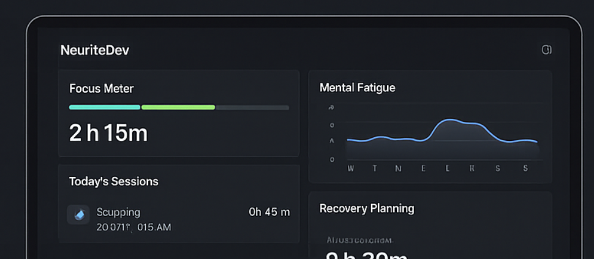
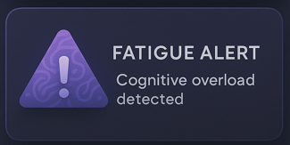
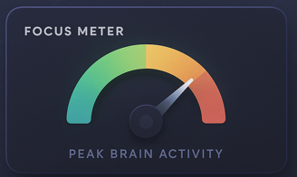

Study Smarter with Real-Time Cognitive Insights
Built with neuroscience, NeuriteDev tracks your mental fatigue in real time and delivers personalized recovery insights—helping you study smarter, not harder.
-
Free Early Access
-
Quick Setup
-
Live Fatigue Alerts
The Hidden Cost of Mental Fatigue
In today’s nonstop world, ignoring your cognitive limits leads to:
-
Brain Fog:
- Difficulty sustaining attention on tasks
- Frequent forgetfulness of recent information
- Overall sense of mental cloudiness
-
Mental Fatigue:
- Slowed processing speed
- Diminished creativity and idea generation
- Difficulty problem‑solving
- Reduced motivation and drive
-
Burnout:
- Chronic emotional and physical exhaustion
- Feeling detached or cynical about work
- Decline in performance and productivity
- Loss of sense of accomplishment
Time trackers measure hours, not cognitive peaks and troughs. NeuriteDev fills that critical gap with real‑time, neuroscience‑backed metrics on your focus, stamina, and creative clarity.
Why NeuriteDev Works
Instant Cognitive Dashboard
All focus sessions are automatically recorded and displayed in interactive charts. Drill down by day, session length, or fatigue levels to uncover insights and optimize your workflow in real time.
Real-Time Fatigue Alerts
Leveraging proven cognitive thresholds, NeuriteDev sends smart notifications when you approach mental fatigue. Take strategic breaks to sustain peak performance and avoid burnout.
Advanced Recovery Planning
Your personalized weekly report merges focus metrics with rest recommendations. Plan downtime scientifically to maintain energy, creativity, and mental health.
Why We're the Best Choice
NeuriteDev is purpose-built for deep work. Unlike generic trackers, we integrate robust neuroscience, seamless hardware-to-app synergy, and a community-driven approach—empowering students and professionals to maintain peak focus, prevent burnout, and foster long-term cognitive resilience without manual input.
Why Choose NeuriteDev?
Science-Backed Insights
Grounded in peer-reviewed neuroscience, our algorithms translate hard data into clear, actionable recommendations.
Unified Hardware & App
Our clip-on device syncs effortlessly with the app for accurate, zero-touch tracking of your mental performance.
Community-Driven Growth
Shape features alongside a dedicated community—your feedback directly influences our roadmap.
Sneak Peek: App Screenshots

Ready to Elevate Your Focus?
Join our early-access program and experience the future of cognitive health tracking.